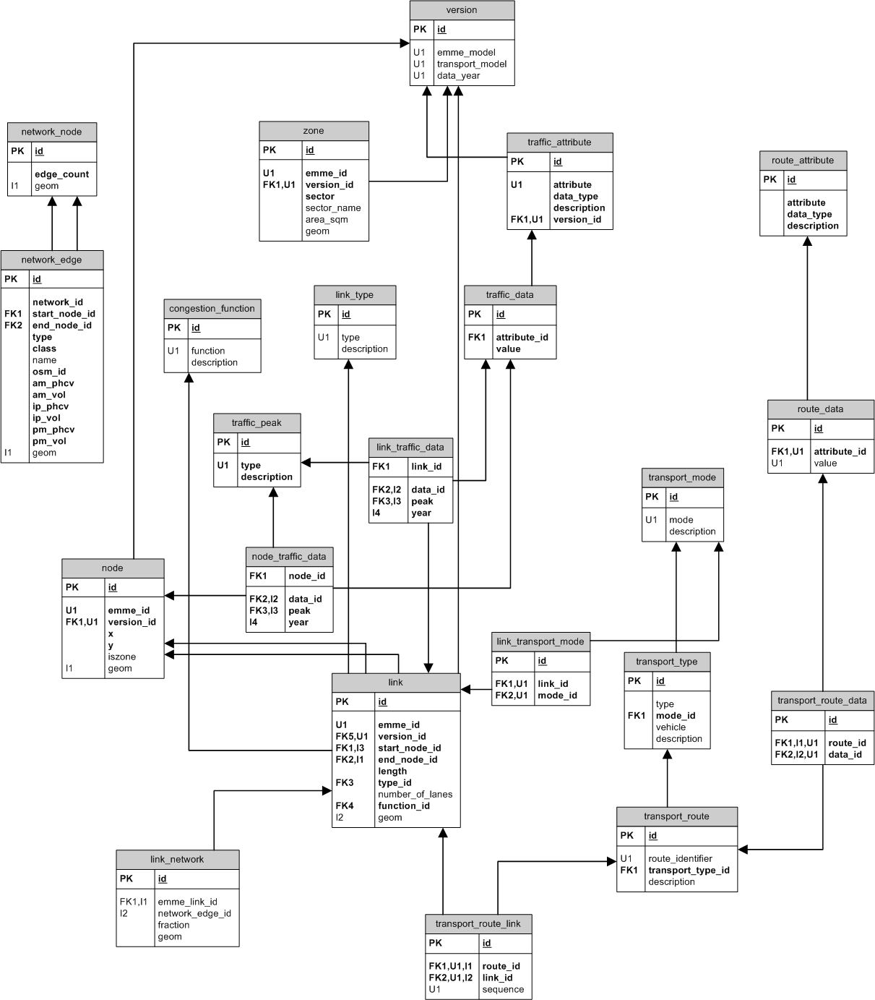

TrafficModel
The Traffic Model schema was designed to hold all traffic data as an extensible set per link and to represent traffic routes.

TrafficModel provides a modelled view of traffic flow through topological network links, which is an abstracted view of the real network and may not correspond to the OSM road network features and needs to be transferred manually.
TOTUS need to support:
- different versions of the Auckland Transport Model and Traffic Model for the same yearly runs
- same model runs for different years with
- same or different link topology
- same or different traffic attributes
- predetermined grouping of modelled links as routes, eg. public transport routes, freight routes, etc.
The Traffic Model schema was designed with these in mind.
Core
At the core of the Traffic Model schema we have the topological links, their model metadata, transport modes and the Aucklant Transport Model (ATM) zones.
link_type:
This is a lookup table for the road types of the modelled links. These may not correspond to the OSM map feature types and are currently not used in transferring Traffic Model links to OSM network edges.
- id (INTEGER): id allocated by database
- type (VARCHAR(32)): numerical road type descriptor as provided by Traffic Model data
- description (TEXT): the description of the road type (N/A)
congestion_function:
These are the different congestion functions applied to the links during modelling.
- id (INTEGER): key allocated by database
- function (VARCHAR(32)): numerical function descriptor as provided by Traffic Model data (VDF)
- description (TEXT): the description of congestion function (N/A)
transport_mode:
The different transport modes supported by modelled link for which the traffic flow is relevant.
- id (SERIAL): key allocated by database
- mode (VARCHAR): the code for the transport mode, eg. b, r modelled on the Traffic Model links or routes
- description (VARCHAR): mode description, eg Bus, Rail, Ferry, etc.
zone:
These are the ATM zones and contain all Traffic Model links. All inter-zone modelling is filtered from TOTUS at this stage.
- id (SERIAL): id allocated by database
- traffic_id (INTEGER): the original ATM zone id
- version_id (INTEGER): revisions the instances of an Traffic Model zone
- sector (INTEGER): ATM sector identifier
- sector_name (VARCHAR(255)): name of ATM zone, eg. Rodney North
- area_sqm (NUMERIC): area of zone (m2)
- geom (MULTIPOLYGON)
link:
The modelled geometry.
- id (SERIAL): id allocated by database
- traffic_id (VARCHAR(16)): Traffic Model id of the format inode-jnode
- version_id (INTEGER): revisions the instance of an Traffic Model link, together with traffic_id uniquely identifies a link
- start_node_id (INTEGER): the id of it's bounding start node (generated from Traffic Model inode's)
- end_node_id (INTEGER): the id of it's bounding end node (generated from Traffic Model jnode's)
- length (NUMERIC): link length assigned by model (not always accurate)
- type_id (INTEGER): the road type associated with this link
- number_of_lanes (SMALLINT): how many lanes were modelled on this link
- function_id (INTEGER): the congestion function used to model traffic flow on this link
- geom (MULTILINESTRING): postGIS mutli-linestring geometry
node:
The node table is created from the inode and jnode geometry provided by TrafficModel.
- id (SERIAL): id allocated by database
- traffic_id (INTEGER): the Traffic Model identifier (original Traffic Model link's inode or jnode)
- version_id (INTEGER): revision this node
- x (NUMERIC): longitude
- y (NUMERIC): latitude
- iszone (BOOLEAN): inter zone node
- geom (POINT): postGIS point geometry
link_transport_mode:
All the transport modes modelled for a link.
- id (SERIAL): id allocated by database
- link_id (INTEGER): TOTUS Traffic Model link id
- mode_id (INTEGER): transport mode
Traffic attributes
TrafficModel provides a set of traffic attributes for each link for different traffic peaks, eg. morning, inter and evening peak.
traffic_peak:
The lookup table for traffic peaks.
- id (SERIAL): id allocated by database
- type (CHAR(2)): traffic peak code, eg. AM, IP, PM
- description (VARCHAR(64)): description of the traffic peak
traffic_attribute:
Identifies a traffic attribute, eg. link traversal time, total vehicles/2hr, and provides information on how to interpret data, eg. data type. Traffic attributes may different from one model and/or year run to the next and may not always be present and are revisioned.
- id (SERIAL): id allocated by database
- attribute (VARCHAR(64)): the attribute name (type), eg. LkTime and correspond to the fields in the traffic attribute file
- data_type (VARCHAR(64)): it's data type
- description (TEXT): description of attribute, eg. time taken to traverse link
- version_id (INTEGER): have no guarantee that attribute types are unique, always indentify attributes using the model and Traffic Model versioning information
traffic_data:
The instances of the traffic attributes, eg. the attribute values
- id (SERIAL): id allocated by database
- attribute_id (INTEGER): the attribute type
- value (NUMERIC): the numeric value for the attribute
link_traffic_data:
Links an Traffic Model link to all instances of it's traffic attributes for each traffic peak and model year.
- link_id (INTEGER): parent Traffic Model link
- data_id (INTEGER): attribute instance
- peak (CHAR(2)): traffic peak
- year (SMALLINT): year of the data used in model run
node_traffic_data:
Any traffic data present for link nodes.
- node_id (INTEGER): parent Traffic Model node
- data_id (INTEGER): attribute instance
- peak (CHAR(2)): traffic peak
- year (SMALLINT): year of the data used in model run
Transport Routes and Attributes
The following tables are used to represent a modelled view of transport routes, eg. public or freight routes. The routes consist of a sequence of Traffic Model links, which holds the route link's attributes, eg. number of public transport routes allocated. The route itself may also have attributes, eg. like 1 ton trucks only.
route_attribute:
A route attribute definition.
- id (SERIAL): id allocated by database
- attribute (VARCHAR(64)): attribute type for a route
- data_type (VARCHAR(64)): the data type for attribute values it holds
- description (TEXT): description of the attribute
route_data:
An instance of a route attribute, eg. attribute value
- id (SERIAL): id allocated by database
- attribute_id (INTEGER): traffic attribute
- value (TEXT): value for the attribute, stored as a string, needs to be cast as a data type
transport_type:
Each transport route are associated with a type of transport, which consist of a type, eg. public, a transport mode, eg. rail, a vehicle, eg. train and a description.
- id (SERIAL): id allocated by database
- type (VARCHAR(64)): the route transport type, eg. public, freight
- mode_id (INTEGER): the mode of transport used on route, eg. truck, bus
- vehicle (VARCHAR(64)): the vehicle description
- description (TEXT): the transport type description
transport_route:
This describes the route itself.
- id (SERIAL): id allocated by database
- route_identifier (VARCHAR(64)): the identifier used by Traffic Model model, eg. may be bus route number
- transport_type_id (INTEGER): the type of transport used on route
- description (TEXT): general description of route
transport_route_data:
Links a route to all of it's transport attributes
- id (SERIAL): id allocated by database
- route_id (INTEGER): transport route id
- data_id (INTEGER): attribute value id
transport_route_link:
All the Traffic Model links (in order) that makes up the route path.
- id (SERIAL): id allocated by database
- route_id (INTEGER): transport route id
- link_id (INTEGER): Traffic Model link id
- sequence (SMALLINT): the order of the link in the route, used to construct the route geometry correctly
Network link
Provides the mechanism of relating an Traffic Model link to one or more OSM network edges. Each OSM network edge assigned to an Traffic Model link is allocated a fraction of the traffic flow of the Traffic Model link. This information is used mostly for aggregated Traffic Model traffic information on a sub-network, a dynamic route, etc.
link_network:
Relates an Traffic Model link with one or more OSM network edges.
- id (SERIAL): id allocated by database
- traffic_link_id (INTEGER): the Traffic Model link
- network_edge_id (INTEGER): the OSM network edge
- fraction (NUMERIC): percentage coverage of OSM network edge on Traffic Model link
- snapped (BOOLEAN): snapped by distance only (TRUE) or linked using candidate routes (FALSE)
- filled (BOOLEAN): an edge in an Traffic Model network link gap, has been filled in (TRUE)
- geom (MULTILINESTRING): the road geometry
Metadata
version:
Provides information about the versions of the Traffic Model and transport model, as well as the year of the ARC data used in model run.
- id (SERIAL): id allocated by database
- traffic_model (VARCHAR(64)): Traffic Model model version identifier, eg. Traffic Model 2
- transport_model (VARCHAR(64)): the ATM model version identifier
- data_year (SMALLINT): year of the ARC data used
{kind=link}